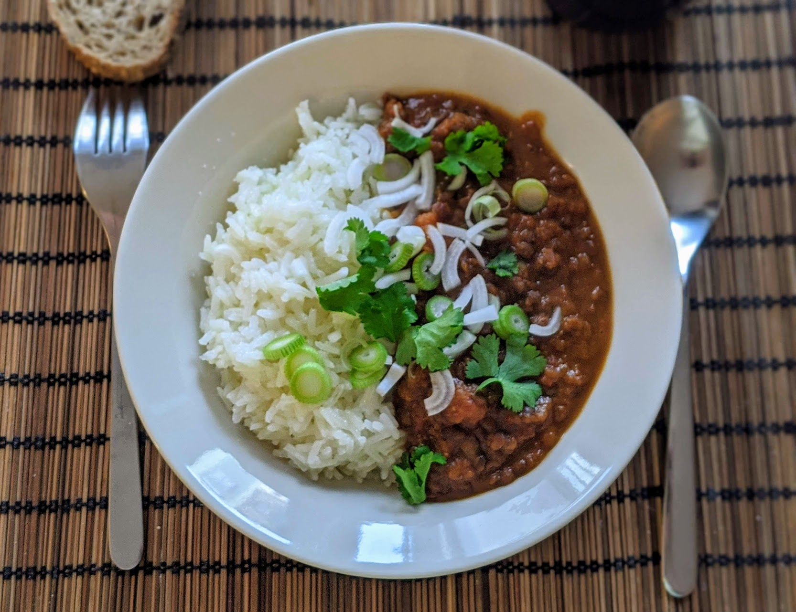

Curry de lentilles

Pour 4 personnes :
- 250g de lentilles brunes
- Une grosse patate douce
- Deux carottes
- Un gros oignon
- Deux gousses d'ail
- Une boîte (400g) de tomates concassées
- Un litre de bouillon de légumes
- Trois cuillères à café de poudre de curry
- 400mL de lait de coco
- (Facultatif) Trois clous de girofle
- (Facultatif) Deux oignons frais
- (Facultatif) Un demi-bouquet de coriandre
- Sel, poivre
- Éplucher l'oignon, l'ail, la patate douce, et les carottes. Écraser l'ail, couper le reste en petits bouts. Si on en a, écraser les clous de girofle au pilon.
- Mettre tous les légumes (à part les oignons frais) dans une mijoteuse, avec le bouillon, les tomates concassées (et leur jus), le curry et les clous de girofle. Faire cuire à feu doux 7-8 heures (on peut aussi faire ça dans une casserole normale à feu doux pendant environ 3-4 heures).
- À la fin de la cuisson, ajouter le lait de coco, et rectifier l'assaisonnement. Laisser encore un peu pour que le lait de coco se réchauffe (mais pas assez longtemps pour qu'il cuise vraiment).
- Servir chaud avec du riz, en parsemant le tout de coriandre ciselée et d'oignon frais émincé.
Retour à la liste des recettes